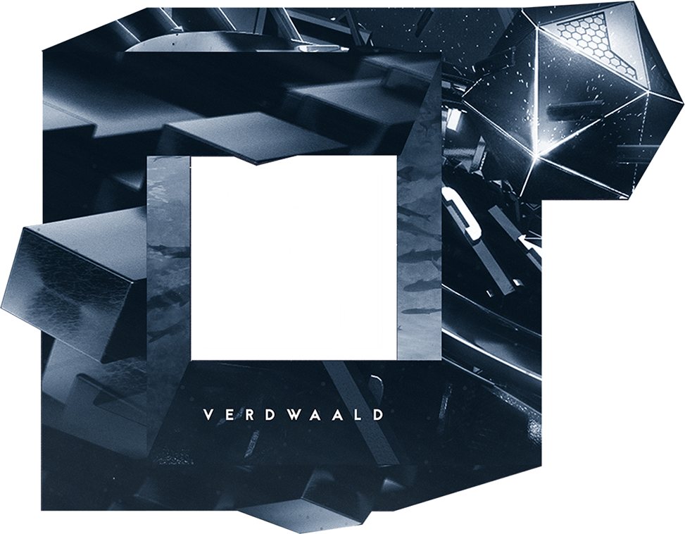

verdwaald
Dit is een beeld voor een techno feest, de klant had een moodbord verstuurd waarin duidelijk was dat hij zocht voor een ontwerp met 3D
elementen. Uit dat moodboard heb ik 2 afbeeldingen genomen en deze geplaatst in een zelf verzonnen onmogelijke cubus illustratie waarin
het logo van de organisatie in past.
Het 3D element heb ik aangenomen door bepaalde delen van de beelden uit de cubus te laten komen.
Het logo en de typo zijn gemaakt door Jens De Craeker.